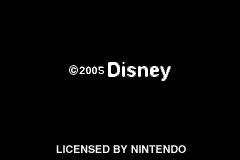
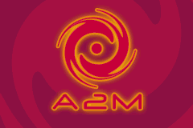

That's So Raven 2 - Supernatural Style (USA) (En,Fr)
Stateless / Passcode 📺 Joybus 🎮 4P Link
Cartridge Identity
- Game Code
BZSE(FamilyBZS)- Header Title
RAVEN2- Maker / Revision
4Q/ rev0- ROM Size
- 8.0 MiB (8,388,608 B)
- Save Media
None / Unknown- SHA-256
2270d7e38057d9b17f900566395ff9dacc5fdae650ec3d9f9897956d1f8c0e36- Engine / SDK Group
comm-015(23 families)
Screenshots


Link Cable & Multiplayer Communications
This title contains detected communication capabilities: 📺 Joybus 🎮 4P Link.
Detailed protocol specifications, SIO registers, Joybus commands, and MultiBoot sequences are documented in the Link & Multiplayer Reference.
- Multi-Player SIO (4P)
- 16-bit ring network · SIOCNT (
0x04000128) literals:0x001a30,0x001a78,0x001b88· SIODATA32/SIOMULTI0 (0x04000120) literals:0x0014b0,0x0069c8,0x006a2c - GameCube Joybus
- Register literal
REG_JOYCNT(0x04000140) at offset0x000a80 - GameCube Joybus
- Register literal
REG_JOYCNT(0x04000140) at offset0x762d80 - GameCube Joybus
- Register literal
REG_JOY_RECV(0x04000150) at offset0x000a48 - GameCube Joybus
- Register literal
REG_JOY_RECV(0x04000150) at offset0x762d88 - GameCube Joybus
- Register literal
REG_JOY_TRANS(0x04000154) at offset0x762d8c - GameCube Joybus
- Register literal
REG_JOYSTAT(0x04000158) at offset0x762d7c
Cartridge Storage Architecture: Stateless / Passcode
Zero non-volatile battery hardware: This cartridge PCB contains ROM only (no SRAM, Flash, or EEPROM chips). Progression is preserved via on-screen passcodes or session-only gameplay. No
.sav file is generated or required.
ROM Assets, Compression & Audio
- BIOS Compression
- LZ77 (
0x10): 0 streams · RLE (0x30): 0 streams - ROM Pointer Tables
- 41 tables (0 pointing to validated compressed streams)
- SDK Backup Tags
EEPROM_V124
Asset Map (formatkit.asset-map.v1)
Download BZSE-r0-2270d7e38057d9b1.asset-map.json.gz (47,384 B (46.3 KiB)) Verified PASS · 21.75% coverage
| Metric | Bytes / Value | Entries |
|---|---|---|
| Identified | 1,191,948 B (1.14 MiB) (14.21%) | 474 |
| Mapped | 0 B (0.00%) | 0 |
| Opaque | 632,628 B (617.8 KiB) (7.54%) | 1 |
| Unknown | 6,564,032 B (6.26 MiB) (78.25%) | 364 |
| Total ROM Size | 8,388,608 B (8.00 MiB) | 839 |
| Coverage % | 21.75% | — |
| Entries w/ Code Refs | 482 / 839 (57.45%) | — |
Top Identified Formats: audio.gax-sample (104 · 1,163,662 B (1.11 MiB)) · gfx.gba-palette (367 · 26,144 B (25.5 KiB)) · compress.bios-huffman (2 · 1,950 B (1.9 KiB)) · gba.rom-header (1 · 192 B)
Largest unknown Extents (Headerless / Custom Asset Candidates)
| Offset | Size | Shannon Entropy | Code Refs |
|---|---|---|---|
0x00430200 | 655,816 B (640.4 KiB) | 5.093 bits/B | 0 |
0x00390858 | 653,224 B (637.9 KiB) | 5.422 bits/B | 0 |
0x005D171E | 518,370 B (506.2 KiB) | 4.277 bits/B | 0 |
0x00171E58 | 516,520 B (504.4 KiB) | 6.215 bits/B | 0 |
0x00323330 | 447,752 B (437.3 KiB) | 6.120 bits/B | 0 |
gzip -dk BZSE-r0-2270d7e38057d9b1.asset-map.json.gz && gbakit map verify rom.gba BZSE-r0-2270d7e38057d9b1.asset-map.json
gbakit assets export rom.gba --asset-map BZSE-r0-2270d7e38057d9b1.asset-map.json -o out/Text, Fonts & Scene Data
- Primary Text Encoding
- 16-bit / UTF-16LE text (
79ASCII strings ·9Shift-JIS runs) - Font & VWF Indicators
- VWF Width Table 1bpp Font · BIOS SWIs: BitUnPack
0x10:1· LZ770x11/12:0· Huffman0x13:1· RLE0x14/15:0 - Scene & Packaging
31ROM pointer tables (≥32 entries,0≥200) ·64relativeu32TOCs ·391OAM metasprite hits · FourCC:GAX2